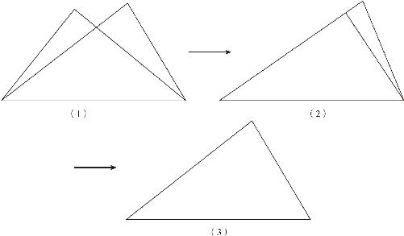
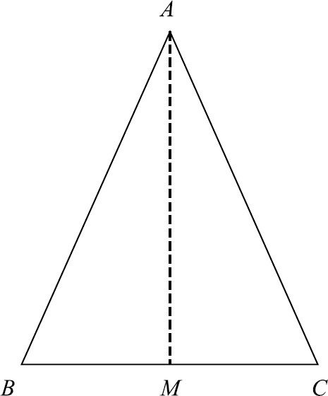

小学的时候，我们学过三角形的面积等于底乘高除以二．但是这属于算术方法，按照这种方式计算面积，必须要知道底和高的具体数值．可是，古埃及人没有皮尺，在不知道具体的长度和宽度的条件下能否计算面积呢？
几何学研究的就是没有数字的数学，就是要在不知道三角形的面积等于多少的条件下把土地分下去，这就要求我们必须弄明白三角形之间的面积关系．接下来，先讨论一个最简单的问题：怎么知道两个三角形的面积是不是相等的？最简单的办法，还是用欧几里得的第一公理：两个图形相互覆盖、相互重合就说明它们相等．可是你要是用这个公理的话，就又得拿出牛皮来，利用牛皮把这个土地覆盖住了，以此确认两块土地的面积是否相等．这不是“辛辛苦苦几十年，一夜回到了解放前”吗？
那怎么办？三角形不就只有三条边、三个角吗？能不能用边角关系来判断两个三角形是完全一样的呢？在几何学中，如果两个图形的大小形状完全相同，能够相互覆盖，我们就把它们的关系叫作全等，全等图形是可以相互覆盖的，这就意味着它们除了位置以外，所有的边、角都是对应相等的．对于两个三角形而言，全等的概念就是它们的三条边和三个角都分别对应相等．什么叫对应相等？就是自己的边和别人的边相等，两个相等的边对着的夹角也相等，这就叫对应相等．如果两个三角形所有的边、角都对应相等，它们就是全等的了，但是如果只有一部分相等呢？接下来，我们就从最简单的条件开始，逐一增加条件，看看增加到什么程度就可以判断两个三角形全等了．
我们先看一下最简单的条件：如果两个三角形，只有一条底边对应相等行不行呢？我们把这两个三角形放在一起后，其中底边已经对齐了，但由于这条边两侧的两个角并不相等，所以这两个角也就无法和另一个三角形相互覆盖．既然不能对齐，那就证明两个图形肯定不全等，所以只有一条边相等［如图5－4（1）所示］是不行的．

图5－4
接下来，我们再增加一个角相等的条件．假设这条边左侧的一个角也是相等的，那么这两个三角形相互覆盖的时候，不但这条边本身对齐了，而且左侧的那个角也就对齐了，角对齐了就说明左侧的那条边也对齐了．可问题是，左侧的两条边长度不同，这就会导致一个结果：左边的另一个端点没有重合，也就是说三角形的顶点没有相互覆盖，因此三角形的第三条边肯定不能相互覆盖了，这两个三角形也就不能算是全等的了［（如图5－4（2）所示）］．
我们再增加条件，刚才不就是因为左边的长度不相等吗？我们就再让它对应相等．
截至目前，我们就有3个条件了：一条底边相等，左侧的一个角相等，左侧的边也对应相等．这时候如果我们再次把它们相互覆盖就会发现：底边对齐了，左角对齐了，由于左边的长短一样，所以三角形的顶点也就对齐了，那么是不是三角形的右边也能相互覆盖了呢？是的．为什么呢？因为两点之间只能确定一条直线！这个三角形右侧的边的两个顶点都固定不变了，它的右边也就不能变了，只能是相互重合．［如图5－4（3）所示］于是我们就得到了三角形全等的第一个判定定理：两条边对应相等，并且两边的夹角对应相等，那么这两个三角形全等．这个定理简称“边角边”．以上的证明过程，也就是欧几里得在《几何原本》中记载的标准方法．
到这里，你可能会产生一个疑问，这样相互覆盖的两个三角形能够代表世界上所有的三角形吗？我们不是曾经强调过，几何定理不能通过相互覆盖的方式来证明吗？是的，这种方法，的确不是特别稳妥，所以欧几里得也就只用覆盖法证明了这一个定理．而且，他还是通过反证法证明的．所谓反证法，就是首先我们假定一个命题是正确的，然后按照正确的推理方式推导，逐步得出相互矛盾的结果，最后就可以通过这个矛盾来证明假设是错误的．以这个定理为例，欧几里得的方法是：假设这两个三角形的第三条边相互不重合，这样就推导出一个结果，那就是过两个固定的点，可以画出两条直线，显然这个结论和我们的第一公设是冲突的．所以，我们就只能说，自己的假设是错误的，这两个三角形的第三条边，肯定也是重合的．“边角边”的定理就是这样．接下来，我们就用这个定理证明两个更显而易见的定理：一是三角形的三线合一定理；二是两点之间直线段最短．首先我们来看一下第一个定理．
如果一个三角形的两条边相等，那么它们对着的两个角就相等．两条边相等说明这个三角形是一个等腰三角形，两条腰对应的角就是它的两个底角．等腰三角形底角相等，这不是明摆着的道理吗？而且这也是我们在小学时学过的基本知识，为什么它还要证明呢？这就是几何学的严谨所在．接下来，我们就一起来分析．

图5－5
任何一个角都是可以被平分成两半的，就像我们折纸一样，只要把一张纸的对角对折起来，把边对齐了，再把纸张铺平，纸上自然就会出来一个折痕．这个折痕和现在的边之间的夹角，是相互重叠的，同时这两个角加起来又等于原来的角的大小，所以这个角就被平分了．之前我们用一张牛皮折叠出直角，用的也是这种办法．假设我们在等腰三角形的顶角中间画一条线，把顶角平分成两半，同时这个平分线还会和三角形的底边产生一个交点，这样一个等腰三角形就被完美地分成两半了．我们要想证明它的两个底角相等，只需要证明分开了的这两个三角形全等就可以了．
首先，这两个三角形是挨着的，它们共用一条边，也就是我们刚画出来的这条角平分线；同时，挨着这个角平分线的两个角是相等的，因为它是我们手动作出来的；而且，这个三角形的两条腰相等．现在，在这两个三角形中，两组边对应相等，中间的夹角也相等，于是我们终于凑齐了“边角边”的条件，所以这两个三角形就是全等的，因此，等腰三角形的两个底角一定相等．完整的证明过程如下：
在△ABC 中，过点A 作AM 平分∠A ，且交BC 于点M ．
∵在△AMC 和△AMB 中，
AB ＝AC （已知），
∠BAM ＝∠CAM （作图所得），
AM ＝AM （公共边），
∴△AMC ≌△AMB （边角边），
∴∠B ＝∠C ．
通过两个三角形全等，我们还可以知道，等腰三角形底边被切开的左右两边BM 和MC 是对应相等的，且∠AMB 和∠AMC 也是对应相等的．要知道，这两个角加起来等于180°，所以它们两个都是平角的一半，即等于直角．这就是著名的三线合一定理：等腰三角形顶角的角平分线就是底边上的高，同时它还是顶点到底边中心的连线（简称中线）．
三线合一定理有没有让你感受到几何学的奇妙？接下来，我们要一起证明一个谁都明白的简单道理．